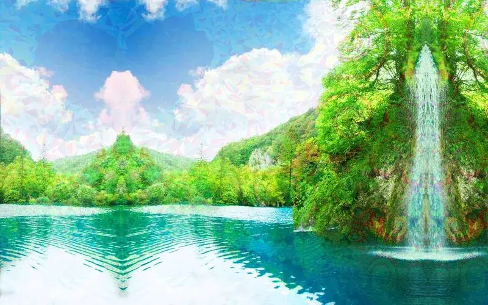

Colour enhancement
Colour enhancement is defined as an intensification of the brightness and vividness of colors in the external environment. During this experience, reds may seem “redder”, greens may seem “greener", and all colors will likely appear much more distinct, complex, and visually intense than they comparatively would be during everyday sober living.[1][2][3][4][5][6][7][8] At higher levels, this effect can sometimes result in seeing colours which are perceived as surreal or seemingly impossible.
Colour enhancement is often accompanied by other coinciding effects such as acuity enhancement and pattern recognition enhancement.[1][2] It is most commonly induced under the influence of mild dosages of psychedelic compounds, such as LSD, psilocybin, and mescaline. However, it can also occur to a lesser extent under the influence of certain stimulants and dissociatives such as MDMA, ketamine[9], or 3-MeO-PCP.
Image examples
Psychoactive substances
Compounds within the psychoactive substance index which may cause this effect include:
Experience reports
External links